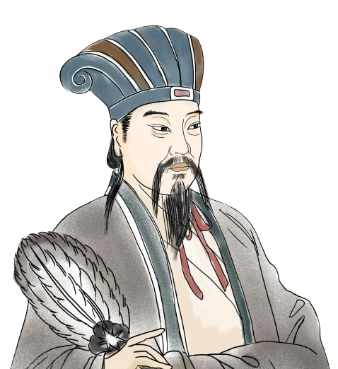
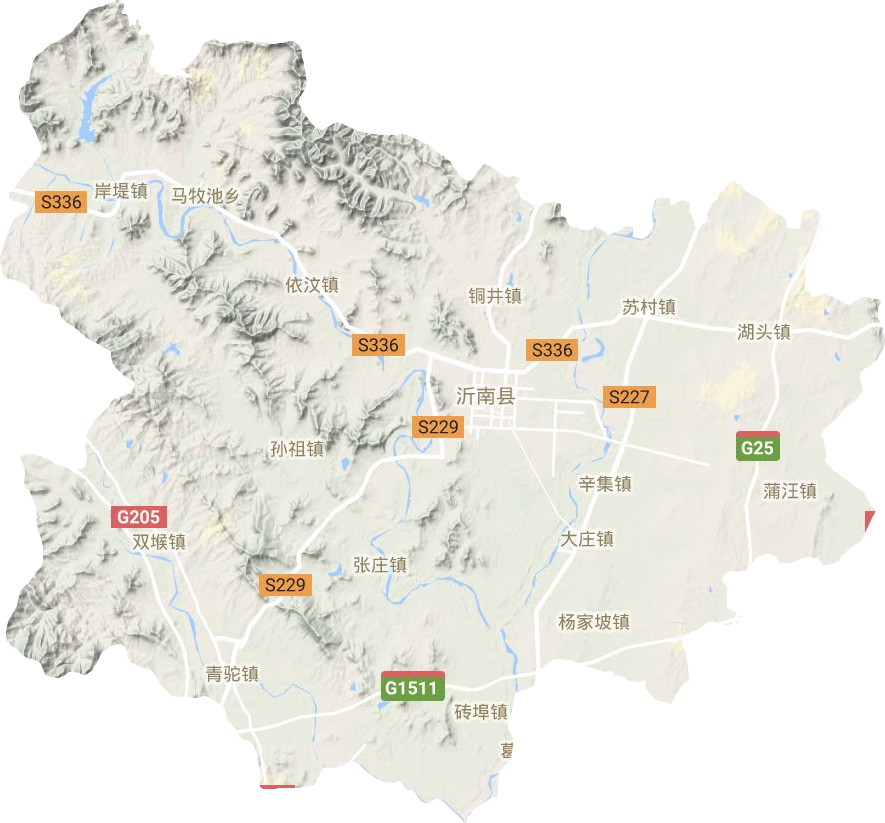

诸葛亮（181－234），字孔明、号卧龙（也作伏龙），汉族，徐州琅琊阳都（今山东临沂市沂南县）人，三国时期蜀汉丞相、杰出的政治家、军事家、散文家、书法家。在世时被封为武乡侯，死后追谥忠武侯，东晋政权特追封他为武兴王。诸葛亮为匡扶蜀汉政权，呕心沥血，鞠躬尽瘁，死而后已。其代表作有《出师表》、《诫子书》等。曾发明木牛流马、孔明灯等，并改造连弩，叫做诸葛连弩，可一弩十矢俱发。于234年在五丈原（今宝鸡岐山境内）逝世。诸葛亮在后世受到极大尊崇，成为后世忠臣的楷模，智慧的化身。成都、宝鸡、汉中、南阳等地均有武侯祠，且杜甫作《蜀相》赞诸葛亮。
葛氏原住在琅琊诸县，后迁到琅琊阳都，阳都先有葛氏，时人称诸县葛氏为诸葛，因之以诸葛为姓。黎东方在《细说三国》称，诸葛亮远祖是商代葛国国君，封邑在今河南省东部。诸葛亮是汉司隶校尉诸葛丰后；父亲诸葛珪，字君贡，汉末为泰山郡丞。汉灵帝光和四年（181年），诸葛亮生于琅琊阳都。不久母亲章氏去世，父亲续娶。中平五年（188年），诸葛亮的父亲诸葛珪去世。一家生活由叔父诸葛玄来照料。
出师未捷身先死，长使英雄泪满襟。—— 杜甫

名: 诸葛亮
字：孔明
号：卧龙
祖籍：徐州琅琊阳都
朝代：东汉末年至三国时期
职业：蜀汉丞相、杰出的政治家、军事家、散文家、书法家。
称谓：在世时被封为武乡侯，死后追谥忠武侯。

葛氏原住在琅琊诸县，后迁到琅琊阳都，阳都先有葛氏，时人称诸县葛氏为诸葛，因之以诸葛为姓。 诸葛亮远祖是商代葛国国君，封邑在今河南省东部。 诸葛亮的父亲为诸葛珪，母亲为章氏。 诸葛亮生于琅琊阳都。为了复兴汉室，夺取天下，刘备到处招纳人才。徐庶和司马徽见他一心爱才，就向他举荐一个人，此人就是人称“卧龙”的诸葛亮。诸葛亮不仅很有学识，又有才能，于是刘备就和关羽、张飞带着礼物到隆中卧龙岗去请诸葛亮出山辅佐他。
诸葛亮隐居在隆中，过着与世无争的日子，却十分关心国家大事。刘备三次到访诸葛亮住的茅庐，请他出来帮助自己打天下。诸葛亮见到刘备有志替国家做事，而且诚意满满，于是为刘备分析天下形势，共同商讨如何才能夺取天下。刘备非常欣赏诸葛亮的才能，愿拜诸葛亮为军师，请他出山，帮助自己夺取天下。诸葛亮被刘备“三顾茅庐”的一片诚心所感动，便离开隆中，到新野为刘备出谋策划。
三十六计其中一计。诸葛亮在蜀汉建兴六年，街亭失守后的机智和策略。面对魏将司马懿大军的威胁，诸葛亮巧妙地运用了心理战术，使敌人产生疑虑，从而成功化解了危机。
诸葛亮的计策
司马懿到达城下后，看到诸葛亮悠然自得的样子，以及城门大开的情况，心生疑虑。
他认为这种情况不符合常理，诸葛亮既然能如此从容，城中必定有埋伏。于是，司马懿决定撤退以避免陷入圈套。
三国时期，曹操率大军想要征服东吴，孙权、刘备联合抗曹。孙权手下有位大将叫周瑜， 智勇双全，可心胸狭窄，妒忌诸葛亮的才干。因水中交战需要箭，周瑜要诸葛亮在十天内 负责赶造十万支箭，哪知诸葛亮说只要三天，还立下军令状，若不完成任务甘受处罚。周 瑜想，三天不可能造十万支箭，便想利用这个机会除掉诸葛亮。
诸葛亮运用一个巧妙的解决方案。他借用20只船，每只船上配备30名士兵，并用青布将船 遮盖，同时准备了一千多个草把子。诸葛亮利用江上的大雾，将船队驶向曹操的水寨。船 上发出鼓声，制造声势，曹操的弓箭手误以为遭到攻击，纷纷向船只射箭。由于船上的草 把子起到了遮挡箭矢的作用，箭头都插在草把子上。当雾散开，诸葛亮指示船只调头返 回，船两边密密麻麻地插满了箭，每只船上至少有五六千支，总共超过十万支。诸葛亮不 仅顺利完成了任务，还让周瑜的阴谋失败。
| 诸葛亮的军事才能： 诸葛亮被誉为兵法大师，但其军事才能也受到一些争议。虽然他在《隆中对》提出了蜀汉的战略方针，并且在若干战役中表现出色，但有些历史学家认为他在实际作战中存在过于谨慎的策略，特别是在北伐过程中，诸葛亮未能彻底击败曹魏，导致北伐多次失败。 | 北伐的效果： 诸葛亮在其一生中进行多次北伐，目标是削弱魏国的力量，然而，有观点认为北伐战役虽然在战术上有所胜利，但没有在战略上取得决定性成功，且耗费了大量资源，未能有效改善蜀汉的战略地位。 | 诸葛亮的个人权力问题： 诸葛亮在蜀汉时期掌握了极大的权力，有人认为他在权力集中和个人独裁方面存在问题。他在刘备去世后，尽管名义上是辅佐刘备之子刘禅，但实际上掌握了大量的权力。 |